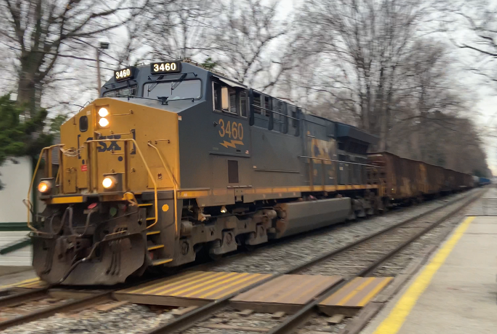

General Electric Standard Series
The General Electric Standard or "Dash" series was their first major break into the modern desiel locomotive market. With launch customer Union Pacific, the GE Dash8-40CW became the basis of the most successful desiel-electric locomotive series to date.
Built in the 80's the GE Dash8-40CW was GE's answer to EMD's SD60. Featuring 4000 horsepower, the Dash8 was CSX's workhorse until it was replaced by the more modern Dash9. CSX still holds onto a few of its old Dash8's in reserve; if you're lucky, you may get to see one of these trusty locomotives in action.
For CSX, the GE Dash9-44CW resembled the Dash8-40CW physically but had improved electronics and increased horsepower to 4400 horsepower. Unlike most class one railroads, CSX chose to keep the original Dash8 trucks instead of GE's new Hi-ad trucks.

The AC44CW, known to CSX as the CM44AC, is distingushed from the GEVOs by its shorter radiator, like that on the C44-9W and C40-8W's. The CM44AC featured new alternating current (AC) traction motors, 4400 horsepower, and a new style of trucks that remained constant with the ES series of GEVO's.

General Electric Evolution Series
GEVO stands for GE Evolution Series, representing General Electric's move into the future and meeting new emmission standards.
The ES40DC and the ES44DC look the same and feature direct current (DC) traction motors. The only difference is that the ES40DC has 4000hp while its counterpart has 4400hp hence the 40 and 44 respectively in the locomotive designations. The ES40DC is essentally an upgraded version of the Dash9-40CW with better electronics.

The ES44DC, like the ES40DC is distingushable from the other GEVO's by its Hi-ad trucks. The ES44DC is the upgraded version of the Dash9-44CW.


The ES44AH more commonly known as the ES44AC is the direct replacement for the CM44AC. The main difference between the ES44AH and the CM44AC is the longer radiator featured on the GEVO series.
See some GEVOs in action! Can you identify each locomotive?
The ET44AH is the replacement for the ES44AH and is GE's newest diesel-electric locomotive available for purchace. THe ET44AH's do not have the second slant on the radiator as seen on the the ES44AH GEVOs do, but the do feature the Hi-ad trucks of the older ES40DC and ES44DC locomotives.